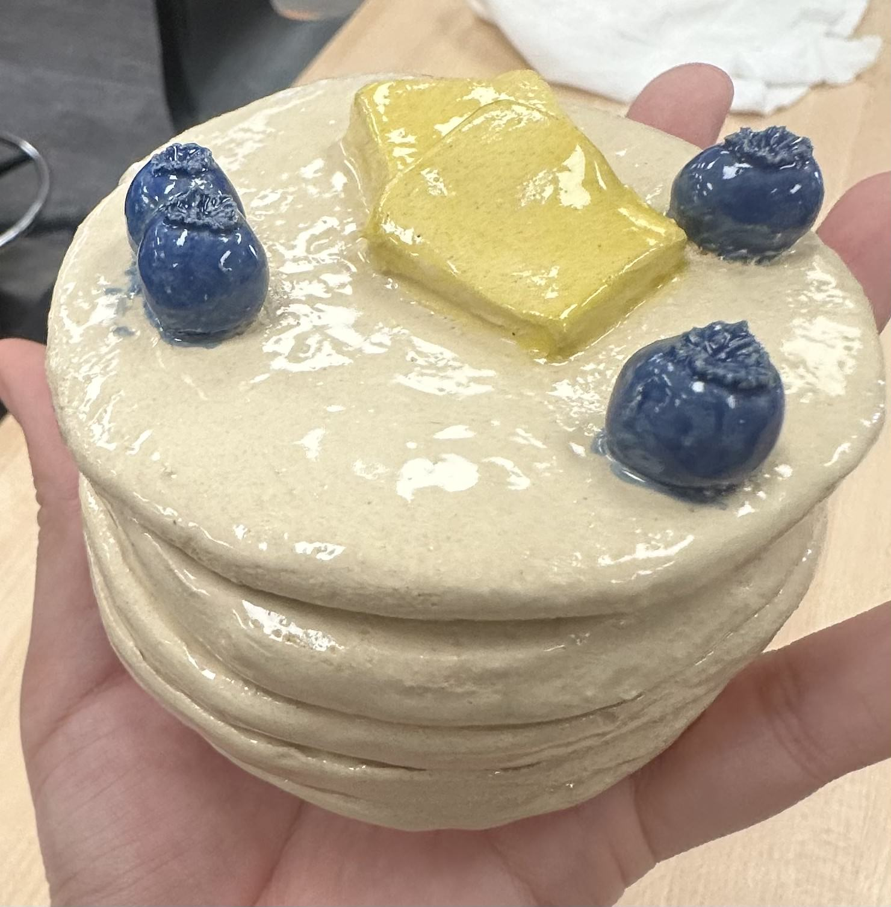
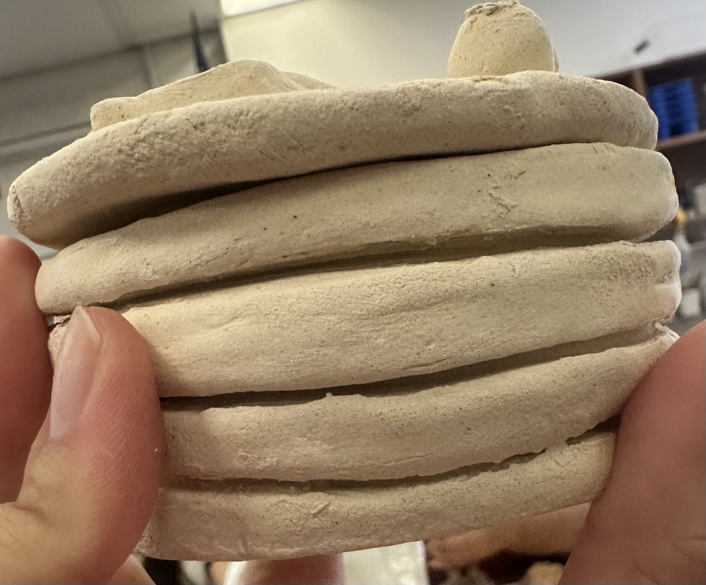
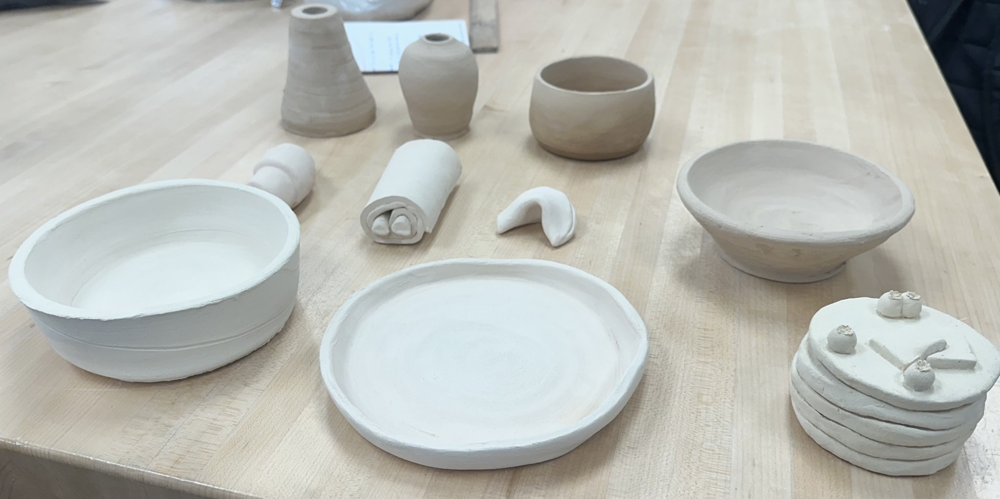

First for some background information, I have never been to a pottery studio or have ever played with clay, I always thought that I just wasn't artistic since I’ve tried other mediums like drawing and painting and I wasn’t good at either of them. When I got assigned to a ceramics class this year I was nervous about trying to be on the wheel and failing to make a single piece. Luckily this wasn't the case as once I started that class I was taught about doing the techniques and once I got onto that while on my second day I made my first bowl. Although I am currently still in the ceramic class I have made a total of 8 pieces with more yet to come.
One project that I am most proud of is this container that looks like pancakes with blueberries and butter on top.
The aspects that I am most proud of is how not only does it actually look like pancakes it serves two purposes: looking pretty as a decoration and being an actual tool as it is a container and I can put my rings and necklace inside of it. I am also very proud that I managed to make the top of it fit (almost) perfectly inside of the other part. Which leads to some of the challenges that I faced during this project, I faced a couple of issues based on the materials that I used. I was looking on social media for inspiration, and I found a bunch of food and this girl made it using air dry clay so she was able to paint on whatever color she wanted so I had the expectation of painting it the same way, also it was more difficult using clay that could be used on the wheel. The video would also skip on certain parts so when it was time to make the top part of the container I had to physically test everything from the thickness of the top parts of the container and connecting it to the pancake and making sure it fits through the hole.
img src="..." alt="8 pieces">This ended up making it look uneven and it looks weird if you turn it a certain way. If I were to do this project differently I could find a cookie cutter with a circle shape just so I could make sure that the clay is even from the beginning. I had an issue of having the circle be uneven when I had to use a water bottle to get the circle shape. I would also make sure to glaze everything right, when I glazed my pieces I was under the intention that I could glaze it however many times I wanted and I would be able to glaze both the top and bottom of the piece, but now I know that I can’t I will make sure to focus on how I glaze it and make sure not to get extra paint like getting a blue glaze on the top of the top even though I tried to cover it with the pancake colored glaze it was too dark and it still shows my mistake. I would also try to change the way the pancakes looked since some of the circles came out weird when they stacked on top of each other they were uneven and it didn’t help that the top was also uneven so there was really only one spot where both pieces fit perfectly.
One specific goal that I have for my next ceramics project would be to make a teapot, now that I have more experience with connecting two clay pieces together and making a lid for the top I have a better idea fo what I could improve upon and how to make the tea pot functional and how to properly glaze the pieces. Next time I hope to make the lid perfectly so at whatever angle I placed the lid it would fit into the pot. Here are some pictures of the pancakes and some other works that I have completed during these first few weeks.
(link to teapots) 